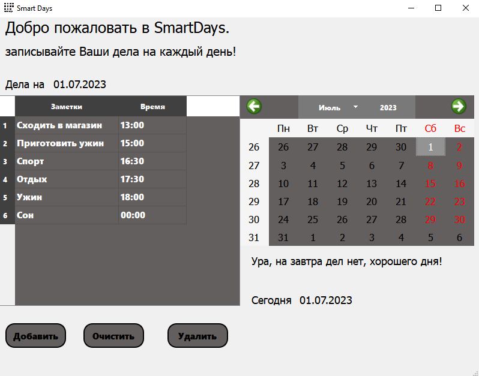

Казаков Сергей Максимович
Москва
C++ Developer
Я - начинающий C++ разработчик
Неплохо ориентируюсь в языке и фреймворке Qt. Каждый день повышаю свои навыки
и учусь новому, постоянно практикуюсь, создавая свои собственные проекты.
Знаю основы SQL. Работал с SQLite в своих проектах.
Знаю и умею много, что не знаю - сам найду и выучу, что не умею - сам научусь. Или вежливо спрошу у коллег.
Очень хочу развиваться профессионально и готов к трудностям.
Мои контакты
Telegram | +79858850963 | sergeykaz.work@gmail.comНавыки
- C++
- Qt Framework
- STL
- SQL
- ООП
- git
- GitHub
- HTML
- CSS
Пройденные курсы:
- Бьерн Страуструп. Язык программирования С++
- Майкл Доусон. Beggining С++ through game programming
Национальный исследовательский университет "Высшая Школа Экономики" - Программирование на C++

Проекты
Qt Проекты
- Конвертер валют
- Имитация маркет-плейса
- Ежедневник


